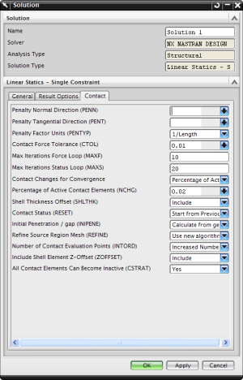

In addition to the parameters you define using the Surface-to-Surface Contact dialog box, you can define contact solution attributes on the Contact tab on the Solution dialog box.
The default contact parameters are fine for most analyses. However, you may need to modify the solution attributes to address:
Convergence and chattering
Singularity
